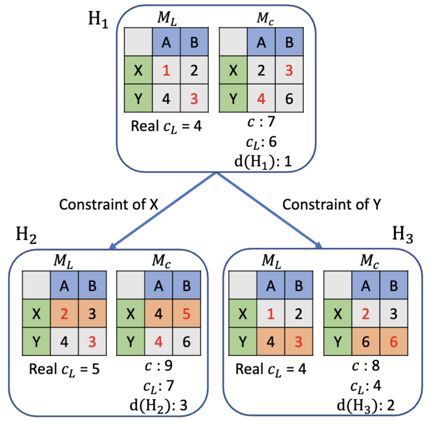
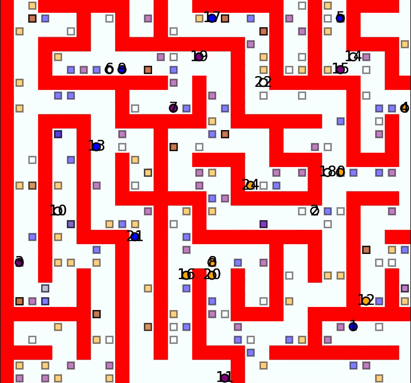

Email: yimintan at usc.edu
Now, I'm a 3rd PhD student at USC (expected graduation: 2027) working with Sven Koenig, Erdem Bıyık, Jiaoyang Li, T. K. Satish Kumar and Shanghua Teng. My research is focused on Multi-Agent Path Finding (MAPF). I am also interested in foundation model and world model.
Before USC, I got my master from CMU RI and worked with Katia Sycara, Jiaoyang Li and Zhongqiang Ren. I received a B.Eng. in Computer Science from ShanghaiTech University in 2020. I also worked as a SDE in Microsoft AzureStack Team for a year.
I am familiar with traditional data structures and algorithms and participated in National Olympiad in Informatics (NOI) and International Collegiate Programming Contest (ICPC). My first programming language is Pascal.
What are the main real-world application scenarios for MAPF ? I would recommend this video from Amazon Robotics. Overall, I believe PIBT and RAILGUN have already captured the essential ideas of MAPF. In that sense, I consider MAPF to be solved.
What has caused the recent qualitative leap from traditional robots to intelligent robotic systems? I believe the answer is LLMs, rather than any fundamental improvement in physical form.
Cars, forklifts, excavators, trains, and airplanes have long been mechanically capable of completing complex tasks when operated by humans. If we hide the interaction between the human and the machine, the resulting system appears fully autonomous. Similarly, hands are not the essence of intelligence: even with a pair of chopsticks in each hand, humans can still complete a surprisingly wide range of tasks.
Robots only need a well-designed set of motion primitives, which can be provided by classical control, motion planning, or VLA models. The remaining challenge is intelligence: deciding how these primitives should be composed, coordinated, and adapted to the environment.
I am therefore shifting my research toward LLM-based algorithm design for robotic warehouses. My goal is to use LLMs to design and continuously specialize task assignment, routing, coordination, congestion management, and replanning algorithms for real warehouse systems.
If you want to schedule a meeting: https://calendar.app.google/iksiB4EJEfR2Cp7z5
University of Southern California (2023.8 - Now ）
Doctor of Philosophy, Computer ScienceViterbi School of EngineeringAdvisor: Prof. Sven Koenig and Prof. Erdem BıyıkCarnegie Mellon University (2021.8 - 2023.8 ）
Master of Science in Robotics Robotics InstituteMaster Thesis: Solving Multi-Agent Target Assignment and Path Finding with a Single Constraint TreeAdvisor: Prof. Katia Sycara and Prof. Jiaoyang Li
ShanghaiTech University ( 2016.9 - 2020.7 )
B.E in Computer Science and TechnologyThe School of Information Science and Technology(SIST)Undergraduate Thesis: 《使用生成对抗网络从人脸到动漫的风格转换》 (指导老师: 何旭明) “Convert People Face to Cartoon Using Three-Stage GAN” (Advisor: Prof. Xumin He)

Applied Scientist Intern
(2026.5 - Now)
Routing Team
Boston
Machine Learning Intern
(2025.5 - 2025.8)
Stripe Assistant Team
South San Francisco

Research Intern
( 2024.5 - 2025.4)
Machine Learning Team
Santa Clara

Software Engineer
(2020.7 - 2021.8)
AzureStack Storage Team
Shanghai
ITA-LaCAM: A Complete and Scalable TAPF Solver via Assignment-Aware Configuration-Space Search
Yimin Tang, Han Zhang, Shao-Hung Chan, Junsoo Kim, Erdem Biyik, Sven Koenig, Jingkai Chen (in review)
Search-Aided Joint Agent-Environment Reinforcement Learning for Robust Lifelong Multi-Agent Path Finding with Rotations
He Jiang, Jingtian Yan, Yulun Zhang, Yimin Tang, Tanishq Duhan, Rishi Veerapaneni, Guillaume Adrien Sartoretti, Jiaoyang Li (in review)
Cube-Based Automated Storage and Retrieval Systems: A Multi-Agent Path Finding Approach
Yi Zheng, Yimin Tang, Sven Koenig, T. K. Satish Kumar (in review, AAAI 2026 Workshop on Multi-Agent Path Finding)
Judgelight: Trajectory-Level Post-Optimization for Multi-Agent Path Finding via Closed-Subwalk Collapsing
Yimin Tang, Sven Koenig, Erdem Bıyık (WAFR 2026)
RAILGUN: A Unified Convolutional Policy for Multi-Agent Path Finding Across Different Environments and Tasks
Yimin Tang*, Xiao Xiong*, Jingyi Xi, Jiaoyang Li, Erdem Bıyık, Sven Koenig (IROS 2025, and also at ICRA 2025 Workshop on Foundation Models and Neuro-Symbolic AI for Robotics, SoCS 2025 extend abstract)
Accelerating Focal Search in Multi-Agent Path Finding with Tighter Lower Bounds
Yimin Tang, Zhenghong Yu, Jiaoyang Li, Sven Koenig (IROS 2025, and also at RSS 2025 Workshop on Scalable and Resilient Multi-Robot Systems)
Enhancing Lifelong Multi-Agent Path Finding with Cache Mechanism
Yimin Tang*, Zhenghong Yu*, Yi Zheng, T. K. Satish Kumar, Jiaoyang Li, Sven Koenig (AAMAS 2025 Workshop on Autonomous Robots and Multirobot Systems)
Enhancing Long Context Performance in LLMs Through Inner Loop Query Mechanism
Yimin Tang, Yurong Xu, Ning Yan, Masood Mortazavi (NeurIPS 2024 Workshop on Adaptive Foundation Models)
ITA-ECBS: A Bounded-Suboptimal Algorithm for Combined Target-Assignment and Path-Finding Problem
Yimin Tang, Sven Koenig, Jiaoyang Li (SoCS 2024)
Solving Multi-Agent Target Assignment and Path Finding with a Single CBS Tree
Yimin Tang, Zhongqiang Ren, Jiaoyang Li, Katia Sycara (IEEE MRS 2023, Best Paper Candidate)
Multi-modal perception and transfer learning for grasping transparent and specular objects
Thomas Weng, Amith Pallankize, Yimin Tang, Oliver Kroemer, David Held (RA-L with ICRA 2020)

First Centralized Learning-Based Method
Foundation Model for MAPF

Twice search [Shortest Path Search+Best-First Search]
faster than
Once search [Focal Search]

Arxiv: link
Self-Loop, Long Context, Memory, Needle in a Haystack
Invoving Cache in Lifelong MAPF

Bounded Suboptimal Version for ITA-CBS

Don't do hierarchical search, Do all levels together
Can grasp transparent objects with RGBD images
CS100 Programming TA ( Sept 2018 - Jan 2019)
SI100 Introduction to Information Technology TA ( Sept 2017 - Jan 2018, Jan 2020 - June 2020)
CS240 Design and Analysis of Algorithms (Graduate Course) TA ( Mar 2019 - July 2019 )
CMU Robotics Institute Summer Scholars (RISS) (June 2019 - Aug 2019)
Lambda AI Research Grant Program
VESSL AI Support Program
2025 ZJU National Academic Forum Outstanding Presentation Award
2025 IEEE IES SYPA Travel Award
2024 Fall USC GSG Professional Development Fund
2024 Futurewei High Performance Intern Award
2023 Best Paper Candidate Award in International Symposium on Multi-Robot and Multi-Agent Systems (MRS)
2023 Viterbi School of Engineering Fellowship
2023 AWAP PintOS: 2nd runner up ($400)
2016-2020 ShanghaiTech University Merit Student
2018 IBM China Outstanding Student Scholarship
2018 ACM-ICPC Xian Asia-East Continent Final Bronze Medal
2018 ACM-ICPC Asia Beijing Regional Contest Bronze Medal
2018 ACM-ICPC Asia Qingdao Regional Contest Silver Medal
2018 Shanghai Student Cybersecurity Competition Special Award
2016 & 2017 ShanghaiTech University Scholarship of Academic Excellence
NOI 2015 (Chinese National Olympiad in Informatics) 铁牌(Participation Award)
涂鸦艺术家——班克斯(Banksy) 机核网(GAMECORES)
一名普通计算机科学家都用些什么装备 机核网(GAMECORES)
LoRR 2024 (The League of Robot Runners ) Organiser https://www.leagueofrobotrunners.org/
Reviewer (I spend avg 6 hours for a 8 pages paper):
Comference
ICLR 2022 (1), IROS 2023 (2)
IROS 2024 (3), NeurIPS 2024 (5), CoRL 2024 (3), WAFR 2024 (1)
AAAI 2025 (6), AAAI 2025 MAPF workshop (3), ECAI 2025 EurMAPF (3), AISTATS 2025 (1), ICAPS 2025 (1), ICAPS 2025 workshop (2)
ICLR 2025 (3), CVPR 2025 (1), ICML 2025 (4), IROS 2025 (3), NeurIPS 2025 (3)
AAAI 2026 (1), IROS 2026 (3), SPAA 2026 (1)
Journal
IEEE RA-L 2023 (1), TJSC 2024 (1), IEEE RA-L 2025 (1), JAIR 2025 (1)
IEEE T-RO 2026 (1), IEEE RA-L 2026 (3)
Open Source:
Contributed for

AWAP 2023 PintOS: 2nd runner up ($400) !
ShanghaiTech tuition supports graciously provided by my parents/family and Chinese taxpayers.
CMU MSR tuition and stipend supports graciously provided by Prof. Katia Sycara, my parents/family and US taxpayers.
USC PhD tuition and stipend supports graciously provided by Prof. Sven Koenig, Prof. Erdem Bıyık, Prof. Bistra Dilkina, Viterbi Fellowship and US taxpayers.